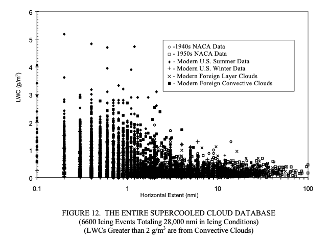

"a number of advantages and uses of this new, distance-based format"

Public Domain figure from DOT/FAA/AR-00/30.
Dr. Richard Jeck 1, retired from the FAA, passed away in January 2026 2.
Dr. Jeck had over 60 publications in the area of aircraft icing 3. Many of them have been cited numerous times, and are currently cited in 2026.
I knew Dr. Richard Jeck professionally through industry organizations (AIAA, SAE) and meetings with the FAA.
I had the opportunity to have a drink with him one evening circa 1993 at an AIAA meeting. He was generous with his time to a junior engineer.
He was uniquely gifted in translating meteorological data into terms that could be understood and used by the diverse communities within aircraft icing (meteorologists, researchers, regulators, industry, pilot, academia, and others).
Here we will review and celebrate some of his numerous technical publications.
His obituary notes him as "A gifted physicist and innovator" and "he pursued truth with unwavering devotion ... in the precision of science". We will see examples of that in this series.
Previous mentions
It was essential to note Dr. Jeck's works when reviewing NACA-era works, particularly on how the NACA-era knowledge is still used today. Jeck often cited NACA works. An example is the figure at the top of this post, where NACA-era data is specifically noted.
Several works by Richard Jeck have already been noted:
-
R. Jeck: "Icing Characteristics of Low Altitude, Supercooled Layer Clouds", FAA-RD-80-24, May, 1980. web.archive.org
-
Jeck, R.: "A new database of supercooled cloud variables for altitudes up to 10,000 feet AGL and the implications for low altitude aircraft icing. US Department of Transportation Rep." Transportation Rep. DOT/FAA/CT-83/21 137 (1983). ntrs.nasa.gov
-
Jeck, Richard K.: A History and Interpretation of Aircraft Icing Intensity Definitions and FAA Rules for Operating in Icing Conditions. DOT/FAA/AR-01/91, November 2001. faa.gov
-
Jeck, Richard K., Icing Design Envelopes (14 CFR Parts 25 and 29, Appendix C) Converted to a Distance-Based Format, DOT/FAA/AR-00/30, April 2002. faa.gov
-
Jeck, Richard: Cloud Sampling Instruments for Icing Flight Tests: (1) Icing Rate Indicators. US Department of Transportation, Federal Aviation Administration, DOT/FAA/AR-TN06/29, 2006. rosap.ntl.bts.gov
-
Jeck, Richard: Cloud Sampling Instruments for Icing Flight Tests: (2) Cloud Water Concentration Indicators. US Department of Transportation, Federal Aviation Administration, DOT/FAA/AR-TN06/30, 2006. rosap.ntl.bts.gov
-
Jeck, Richard: Cloud Sampling Instruments for Icing Flight Tests: (3) Cloud Droplet Sizers. US Department of Transportation, Federal Aviation Administration, DOT/FAA/AR-TN06/31, 2006. rosap.ntl.bts.gov
-
Jeck, Richard: Cloud Sampling Instruments for Icing Flight Tests: (4) Large Drop Sizers. US Department of Transportation, Federal Aviation Administration, DOT/FAA/AR-TN06/32, 2006. rosap.ntl.bts.gov
-
Jeck, Richard K.: Advances in the Characterization of Supercooled Clouds for Aircraft Icing Applications. DOT/FAA/AR-07/4, Appendix C, November, 2008. web.archive.org
Reviews of Dr. Jeck's works
Readers will be rewarded by the depth of information and variety of topics addressed by Dr. Jeck.
"Icing Information Notes"
Icing Intensity Definitions
- "AN ENGINEERING-ENABLED (MEASURABLE! AND CALCULABLE!) ICING SEVERITY SCALE" [in work]
28,000 Miles of Icing Data
- "a number of advantages and uses of this new, distance-based format" [in work]
- Using the Supercooled Cloud Database [in work]
Supercooled Large Drop (SLD) Icing
- "a new convention is proposed here for reporting and specifying water concentrations and dropsizes for freezing rain and drizzle" [in work]
Conclusions of the series on Dr. Richard Jeck [in work]
Notes
-
A Recognition and Biography 24-7pressrelease.com ↩
-
Obituary loudounfuneralchapel.com ↩
-
A listing of publications from scholar.google.com ↩